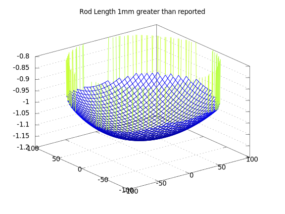
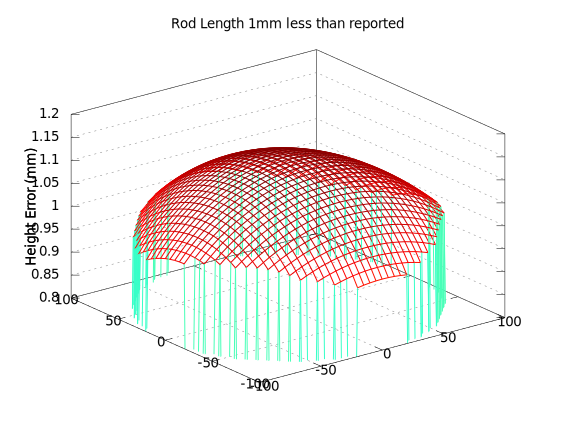
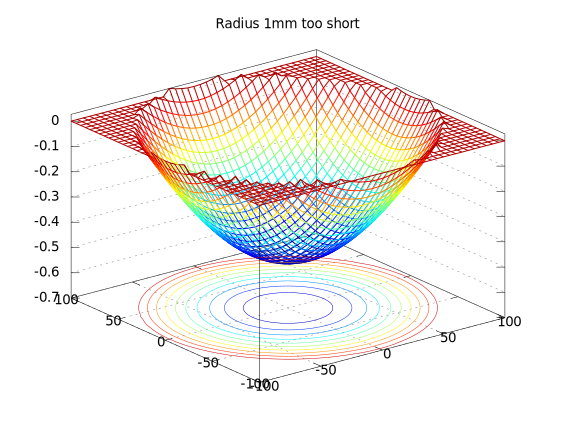
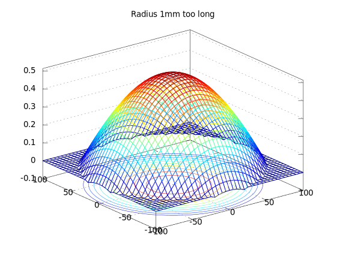
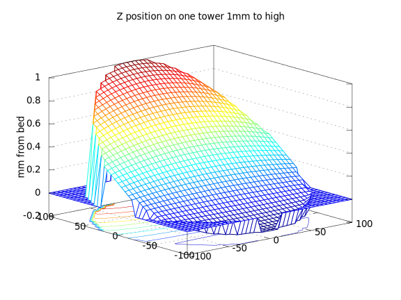
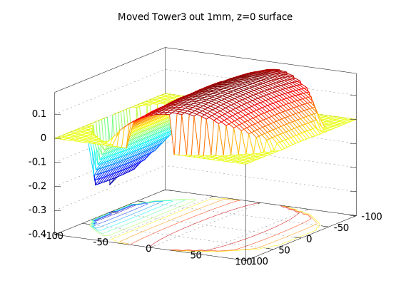
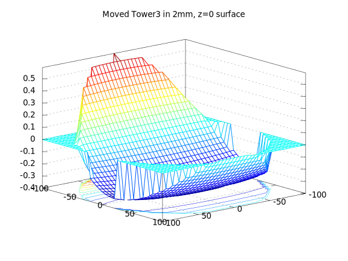

The scale of a printed object depends on the length of the delta rods. Since this dimension is measurable, I prefer to leave it constant as much as possible. If it is mis-measured, you can get bed-scan distortions like these:   You may note that there is a height shift on the close order to the amount of measurement error in the diagonal rod, and a very small curvature distortion, which I will call bowl/dome distortion. Shift up and down is hard to measure, and usually calibrated, so it is hard to measure diagonal rod length errors from bed probes. The bowl/dome distortion is rather small compared to the level shift. These are all reasons why I advocate for measuring diagonal rod length carefully, and holding it fixed for most calibrations.
You will note that the distortion from the diagonal rod length is similar to the distortion from a mis-set DELTA_RADIUS:   Note that the bowl/dome distortion from this error is about 4x as pronounced as the bowl/dome distortion caused by the same error in delta rod length. This makes DELTA_RADIUS a better candidate for computation by calibration procedures, as compared to the diagonal rod length.
The DELTA_RADIUS is virtual and hard to measure. It would be the distance from the center of pivots on the effector head to the center of the pivots on the tower carriages, when the effector is centered, projected into the ideal bed plane. Since the location of center somewhat arbitrary, and it is hard to measure projections of virtual points into a virtual ideal plane, this measurement is best left to calibration, and not measurement.
One of the most common errors would be tower endstop settings.
When these are in error, the primary effect is to produce a tilt to the
bed scan:

This will be the most common distortion, and must be tracked reguarly,
or your prints may not stick to the bed properly, or worse you may crash your
hotend into the bed.
Combine similar errors from all 3 towers, and you can produce
a distortion which is (mostly) a plane of arbitrary tilt.
I worry that my fabrication skills are not professional class. If my towers do not map out the perfect vertices of an equilateral triangle, I could get distortions like these, if we assume in our motion model that the tower placement was perfect:  
Need more plots/data of XY-distortions. Especially from Tower placement error.
Backlash and drift
FSR comparison
Compensation by randomization
Compensation by randomization and re-homing
Conclusions
DELTA_RADIUS seems to be fairly stable.
Most of the time, only a tilt/shift correction is necessary.
Better adjustment parameters can be obtained by searching for the optimal
solution which alters only those parameters.
Tilt-only calibration recheck can be done in less than 5 minutes, and only needs to be repeated every several days, and/or when the printer is moved.